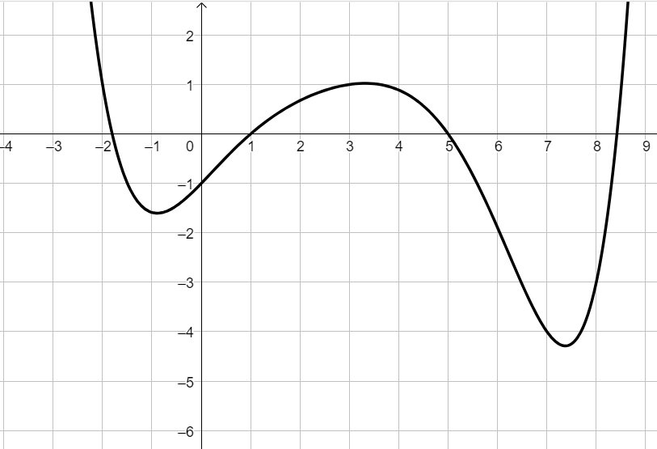

Consideriamo la funzione \(h\) rappresentata dal seguente grafico.

Stabilire se le seguenti affermazioni sono vere o false.
Motivare ciascuna risposta.
-
a) \(h(-2) = 1\)
-
b) \(h(1) = -1\)
-
c) Esiste un unico valore che assegnato alla \(x\) fa assumere alla funzione valore \(0\).
-
d) La funzione \(h\) assume valori positivi se il valore assegnato se \(1 \lt x \lt 6\)
-
e) Il valore assunto da \(h\) in \(x = -1\) è compreso tra \(1\) e \(2\).
-
f) Il più piccolo valore assunto dalla funzione \(h\) è compreso tra \(-6\) e \(-5\).